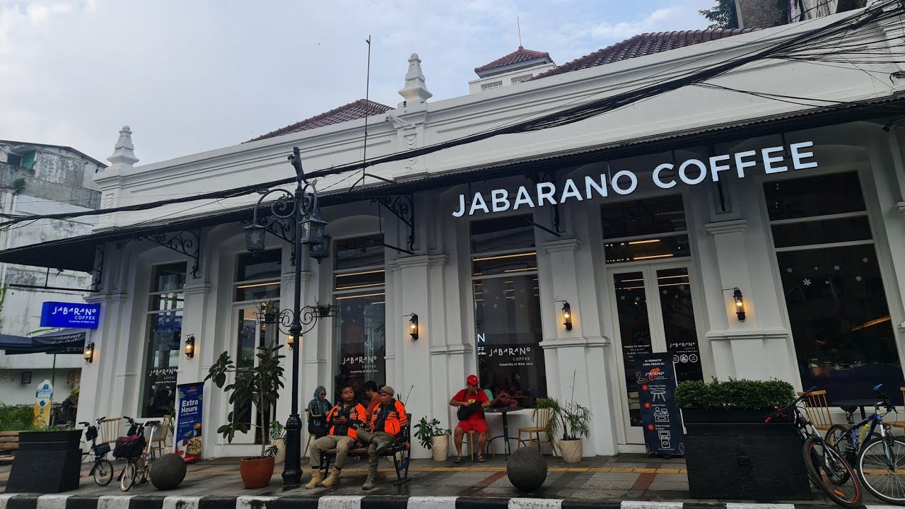
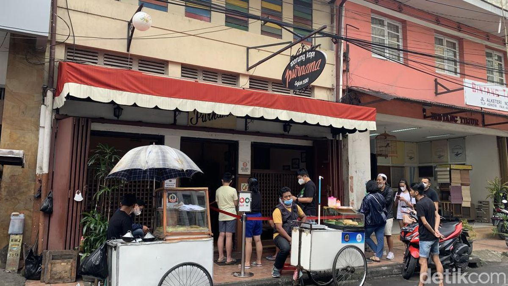

Jabarano Coffee
sumber: youtube.com
Selain menyajikan kopi dari biji kopi asli Jawa Barat, Jabarano Coffee juga memiliki menu Nusantara seperti nasi goreng rendang dan bebek goreng yang diolah secara halal. Tempat ini sudah tersertifikasi halal dan memiliki musala yang nyaman.
📍 Jl. Braga No. 15, Braga, Kota Bandung
🕒 06.00 - 01.00 WIB, 24 Jam Setiap Jumat SabtuMie Bakso Kota Kembang
sumber: gofood.co.id
Destinasi wajib bagi pecinta bakso dan mie. Tempat makan ini nyaman dan menyajikan mie yamin, bihun, dan bakso yang lezat dengan harga terjangkau.
📍 Jalan Asia Afrika No. 32, Kota Bandung
🕒 08.00 - 20.00 WIB (Tutup di hari Senin)Warung Kopi Purnama
sumber: detik.com
Berdiri sejak 1930, warung kopi ini menawarkan suasana tempo dulu dengan menu andalan kopi susu dan roti bakar selai srikaya. Cocok untuk sarapan atau santai sore.
📍 Jalan Alkateri Nomor 22, Braga, Kecamatan Sumur Bandung, Kota Bandung
🕒 06.30 - 21.00 WIB
Info Terbaru Bandung:
Wisata dan Kuliner
Contact Us!
+62-123-4567-890 email@address.com
Wisata dan Kuliner
Contact Us!
+62-123-4567-890 email@address.com